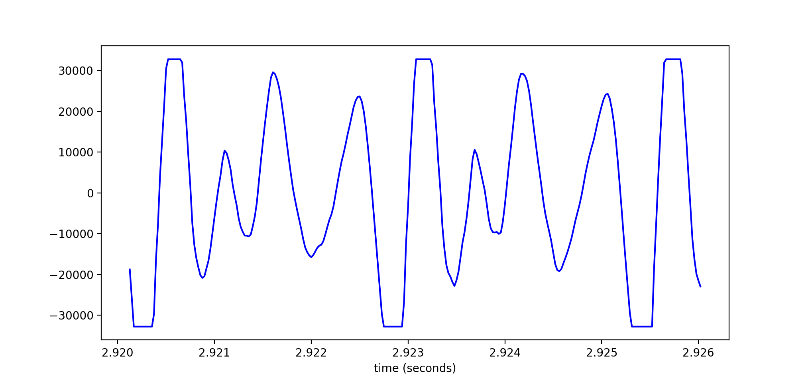
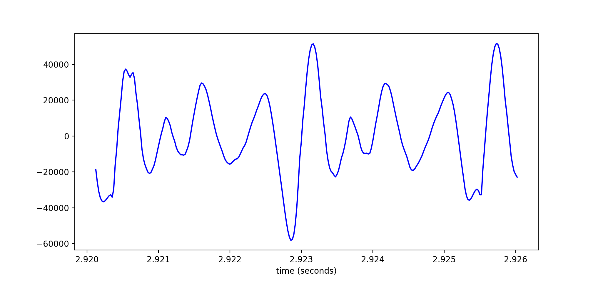

Tutorial on declipping wav files
In this post, I introduce the problem of clipped audio when sound is recorded through a microphone. The post does not assume a signal processing background, but does assume Python programming knowledge. Though the tutorial will go through major parts of the declipping process, the full script can be found at our Github repository.
What is clipping?
Signals in longitudinal waves traverse through space through the oscillation of particles. As particles move back and forth, they push against each other. Thus, even though a single particle only moves a short distance, the signal in the wave is smoothly propagated through space. Dr. Daniel Russell gives an excellent demonstration of this phenomenon with a 1D longitudinal wave, in which a signal is propagated in one direction, from left to right:

Though sound waves are 3-dimensional, the principal of signal propagation is the same. Air particles push against each other, oscillating back and forth to propagate the sound signal through space. The amplitude of a longitudinal wave corresponds to the displacement of individual particles: how far they oscillate before returning to their position of equilibrium. In sound, we perceive amplitude as volume. The louder a sound signal is, the further the air particles are moving back and forth to propagate the signal before returning to their original state.
The task of a microphone is convert this physical acoustic signal into electrical energy that can then be interpreted by computers, or passed on to speakers, etc. Microphones do this by using what is called a diaphragm: a thin flexible material that vibrates back and forth when bombarded by oscillating air particles in a sound wave. Unlike the oscillation of air particles, the oscillation of the diaphragm can be constrained in two ways: both by the physical space containing the diaphragm, and the power supply to it. In this way, microphones have a minimum and maximum amplitude that they can handle. If the original sound signal is at a volume (amplitude) too great for the diaphragm, the signal becomes “clipped”; some of the original acoustic signal is too loud to be converted into electrical energy. You can hear what this sounds like in the sample below.
Here, the clipping is particularly prevalent in the word “fascinating”, which sounds quite buzzy compared to other words in the utterance.
Why is this a problem for TTS?
Neural text-to-speech (TTS) relies on having hours of recorded speech data divided into short utterances, such as the sample above. Through providing a neural model with hundreds or thousands of these training samples, paired with their corresponding text, it learns to create a mapping between the written text and the speech. Given enough data and training time, the model will eventually be able to synthesise new utterances that weren’t present in the training data.
Because the neural model is trained on many of these samples, if only one or two contain clipping, the model will probably learn to ignore it as an anomaly; it won’t produce clipped speech. However, if the clipping is prevalent in the training data, the model will learn to replicate it as part of the target sound. This is particularly problematic when training with public domain data, where it is impossible to send the bad utterances back to studio to be rerecorded. To address this issue, we developed a system to identify clipped segments in audio files, and “declip” them.
What is declipping?
Declipping is the process by which we use interpolation to estimate the signal at its clipped segments, using information in the original signal that we know to be non-clipped. In this tutorial, we will walk through a three-step process to declip the clipped audio file above. First, we will see how to identify the clipped segments in the waveform. Then, we will see how to fix each of these segments, in an effort to restore what we hypothesise to be the original signal. Finally, we will see how to save our edited waveform as a new audio file.
Identifying clipped segments
Visually, identifying clipped segments is pretty straightforward. Below is a 6ms segment of the waveform from the clipped audio above. This segment occurs inside of the “a” vowel within the word “fascinating”. 
Here we can see that the waveform plateaus at minimum and maximum values.
Note
that the y-axis in this image is unitless; we will come back to this when it
is
time to save the new declipped audio file. So the plateaus are visually
obvious,
but how can we identify them programmatically? To do so, we first need to
convert the audio file into a numpy array. Assume here that the audio file
is a
.wav as opposed to an .mp3 or other audio file format.
from scipy.io.wavfile import read
import numpy as np
sample_rate, file_info = read(wav_path)
np_array = np.array(file_info, dtype=float)Then we need to store the max and min of this numpy array. We will use this information to determine if a particular waveform sample is inside of a clipped segment or not.
nmax = max(np_array)
nmin = min(np_array)Ultimately, we want to return a list of all of the clipped segments, so we
instantiate an empty clipped_segments
list
that will be filled as we loop through every sample in the numpy array.
Additionally, as we loop through, we want to keep track of whether or not we
are
currently inside of a clipped segment, as well as the start and end indices
of
the current clipped segment. So we predefine these variables as well.
clipped_segments = []
inside_clip = False
clip_start = 0
clip_end = 0Now we are ready to loop through our numpy array.
for i, sample in enumerate(np_array):If a certain sample is equal to or extremely close to the max or min of the array, then we identify this as a clipped sample. If we haven’t determined that we are already inside of a clipped segment, then we declare that we are indeed in a clipped segment, and this clipped sample is the first clipped sample of that segment.
if (sample <= nmin + 1) or (sample >= nmax - 1): # sample equal to or extremely close to max or min
if not inside_clip:
inside_clip = True # declare we are inside clipped segment
clip_start = i # this is the first clipped sampleBut if the sample is not equal to or extremely close to the max or min, then we know we are now not inside of a clipped segment. So if we were in a clipped segment before, we can now identify the previous sample as the end of that segment. Now we know the start and end of our clipped segment, which we can store as a tuple, and then add to our list of clipped segments.
elif inside_clip:
inside_clip = False # not longer inside clipped segment
clip_end = i-1 # previous sample is end of segment
clipped_segment = (clip_start, clip_end) # save segment as tuple
clipped_segments.append(clipped_segment) # store tuple in list of clipped segmentsFixing the segments
Recall from above that the objective is to use the non-clipped information
outwith1
the
segment to estimate what the signal would have looked like were the
microphone’s
diaphragm not pushed to its limits. We can do this with interpolation using
the
scipy library again. We’re also going to
import matplotlib.pyplot so that we can
see
the results of our declipping in action. Now that we have identified where
the
clipping occurs, we want to loop through each of these segments and declip
them
one by one. Since we will also be saving our new predicted values to a new
array, let’s make a copy of the original array now.
from scipy.interpolate import interp1d
import matplotlib.pyplot as plt
new_array = np_array.copy() # make copy of original np_array
for segment in clipped_segments:First we should get a few of the samples surrounding the segment that we know are not clipped. Let’s say 5 samples before and after.
start = segment[0]
end = segment[1]
x_true = list(range(start - 5, start)) + list(range(end + 1, end + 6))
y_true = [np_array[i] for i in x_true]Now we can use interpolation to define a function to predict the missing
values.
Note that we want to use cubic interpolation, as opposed to linear, to
accommodate for the curvy shape of the waveform. Then we can get a list of
all
the sample indices (x_axis) we want to
pass
through this function. And finally we can generate our new sample values
(y_axis).
interpolation_function = interp1d(x_true, y_true, kind='cubic') # function to predict missing values
x_axis = list(range(start - 5, end + 6)) # indices to pass through function
y_axis_new = [ float(int(i)) for i in interpolation_function(x_axis)] # new sample valuesLet’s see what this function did, by plotting the original sample values against the new values we’ve just calculated.
y_axis_old = [np_array[i] for i in x_axis] # original values
plt.plot(x_axis, y_axis_old,'bo-')
plt.plot(x_axis, y_axis_new,'r--')
plt.show()Below are the first two clipped segments, with the original values shown in
blue
and our predicted new values in red, from the clipped audio sample above.
Note
that the x-axis here is just the np_array
indices. If we wanted to see the time in seconds instead, we could divide
each
x-axis value by the sample rate, which for this wav file is 48khz.
Now we can finally update the numpy array with the new values.
for i, x in enumerate(x_axis):
if start <= x <= end:
new_array[x] = y_axis_new[i]Recall the 6ms segment from above showing the plateaus. If we plot this segment in the new array, we can see that the plateaus have now been interpolated with our predicted values. 
Saving the new array as a wav file
Note that the scale of the y-axis in the 6ms segment has grown because we have predicted new values above the original min and max. The original scale was dependant on the limits of numpy arrays. So if we simply tried to save this array as-is, we would actually produce overflow. Let’s try it now.
from scipy.io.wavfile import read, write
write("bad_file.wav", sample_rate, new_array)Notice that the file sounds even worse than before due to overflow. Warning: I would not recommend listening to this sample through headphones.
To avoid this overflow, we need to rescale the y-axis so that it is between -32768.0 and 32768, as constrained by the numpy array. We can do this by first finding the maximum or minimum value of the new array, dividing the new array by that value, and then multiplying the new array by 32768.0. Finally, we declare the new array as 16-bit.
new_max = max(abs(new_array)) # find new maximum
new_array = np.divide(new_array, new_max) # divide by maximum
new_array = np.multiply(new_array, 32768.0) # multiply by old maximum
new_array = new_array.astype('int16') # 16-bitIf we look at the 6ms segment now, we’ll see that it is again between -32768.0 and 32768, as it was before it was declipped.
We are finally ready to save the file!
write("new_wav.wav", sample_rate, new_array)Notice that the new file sounds quieter than the original. This is because we rescaled the y-axis to accommodate for our predicted values. We increased the maximum and minimum amplitude, and so all the original values now have a lower volume.
Notice also that the file still sounds buzzy in some of the places where it was clipped before, such as in the word “fascinating”. This is because we can never truly recover the original signal, as it was lost at recording time when the microphone’s diaphragm maxed out. However, the buzziness is hopefully less stark than it was before, and now more easily ignorable by our neural TTS system.
-
This Scottish preposition is the opposite of “within”. In non-Scottish dialects of English, it roughly means “outside of”. I picked up this word when I was doing my Master’s in Edinburgh, and I think it’s very useful and severely underused!
↩